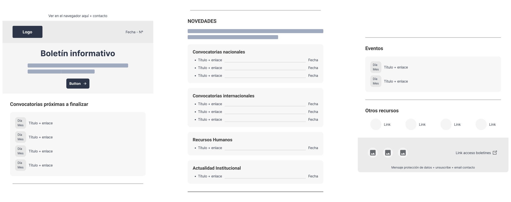

¿Cómo crear una newsletter que concentre la información esencial, minimice el exceso de correos y optimice el acceso a novedades y oportunidades para el personal?
Diseñando un boletín estructurado, que priorice contenidos relevantes para el personal, con un diseño intuitivo para facilitar la navegación y mantener una coherencia visual corporativa.
Rol
Diseñadora UX/UI con enfoque en proyectos end-to-end
Responsable de implementación
Skills
Metodología Design Thinking
Investigación de usuarios y análisis de datos
Creación de wireframes y prototipos
Herramientas
Figma
Notion
Optimal Workshop
HTML5
CSS3
01. Descubrir, entender y empatizar
Comprendiendo el desafío y los objetivos de la investigación
Identificar requisitos y expectativas con stakeholders clave (Product Owner y responsables de comunicación interna) para definir el propósito y alcance de la newsletter.
Investigación del comportamiento del personal interno respecto a las newsletters actuales, identificando cómo se comportan ante ellas y qué información consideran prioritaria recibir.
Análisis heurístico de newsletters corporativas, analizando patrones de UX/UI y mejores prácticas para optimizar la escaneabilidad, jerarquía visual y engagement.
Definición de criterios de éxito de la newsletter, alineando las expectativas del Product Owner con las necesidades del personal.
Investigación secundaria
Análisis heurístico
Se llevó a cabo un análisis heurístico de 3 newsletters, 2 de organizaciones similares y 1 de otro sector. Esto permitió identificar patrones de UX/UI efectivos, analizar estrategias aplicadas por otras organizaciones, minimizar errores en contenido y diseño, y adoptar buenas prácticas. El objetivo fue establecer un estándar de diseño sólido con el objetivo de respaldar decisiones con referencias de empresas que ya habían optimizado sus newsletters, asegurando una base clara y funcional desde el inicio.
Se realizaron 12 entrevistas a personal interno con diferentes perfiles dentro de la empresa: 6 personas investiagdoras, 3 administrativos y 3 técnicos. Las entrevistas se llevaron a cabo tanto de manera presencial como virtual, con una duración aproximada de entre 45 minutos y 1 hora. El planteamiento para realizar las entrevistas fue el siguiente:
Hallazgos de la investigación
La falta de una newsletter interna dispersa la comunicación y dificulta el acceso a información clave.
El exceso de correos satura al personal, por lo que es esencial priorizar y estructurar mejor los contenidos que se envían.
El análisis heurístico evidenció que la falta de un índice o resumen podía hacer que los usuarios tuvieran que navegar en exceso, mientras que la escasez de CTAs visibles, dificultaría la interacción, además de un exceso de texto y elementos que generaban ruido visual.
Las entrevistas revelaron que el personal prioriza información breve, segmentada por áreas y con acceso rápido a novedades y oportunidades clave.
02. Definir el desafío
Audiencia objetivo
Después de realizar el research, se detemrinó que el MVP respondería en una primera fase a las necesidades del personal investigador, el perfil mayoritario dentro de la organización.
Recorrido del usuario
Planteamiento del problema
Actualmente, el personal investigador pierde tiempo buscando información clave entre correos dispersos debido a la falta de una newsletter centralizada. Para optimizar la experiencia, la solución debe sr una newsletter única que se estructure en secciones reconocibles con un índice o resumen inicial para agilizar la consulta, CTAs visibles que destaquen plazos y acciones clave, y accesos directos para contactar con los departamentos responsables de la información. El diseño debe priorizar la escaneabilidad, la claridad visual y la reducción de sobrecarga de contenido.
03. Idear la solución
Card Sorting
Para definir una arquitectura de información intuitiva, se realizó un card sorting con 16 participantes en Optimal Workshop. El análisis reveló que "Eventos" fue la categoría con mayor consenso, seguida de "Oportunidades de financiación", donde convocatorias nacionales e internacionales se identificaron como elementos clave. "Recursos Humanos" también mostró un gran consenso, aunque con algunas variaciones en su agrupación. En contraste, "Actualidad institucional" y "Recursos y herramientas" tuvieron menor coherencia en la clasificación, por lo que su organización se ajustará progresivamente en futuras iteraciones.
Enfoque MVP para resolver el planteamiento del problema
Para el desarrollo de un MVP que resolviera el problema identificado y aportara valor inmediato al personal interno investigador, se definieron las siguientes ideas clave:
Newsletter estructurada y modular, con una jerarquía de contenido clara y secciones bien definidas.
Diseño visual optimizado, priorizando la escaneabilidad mediante el uso de componentes, bullet points y CTAs visibles.
Formato de distribución dual, enviando la newsletter por correo electrónico y ampliándola a través de un PDF interactivo con acceso directo.
04. Diseñar con propósito
Sketching
Este sketching definió la primera estructura de la nueva newsletter interna a partir de la información obtenida en fases anteriores. Se buscaba optimizar jerarquía, escaneabilidad y CTAs estratégicos, priorizando información clave como convocatorias próximas a finalizar. Además, tras la revisión con el P.O. se incorporaron botón de acceso al PDF del boletín completo, enlace a boletines anteriores y número de edición.
Wireframes
Este wireframe de baja fidelidad tradujo el sketching inicial en una versión digital más clara y estructurada. Se refinó la jerarquía visual, mejorando la diferenciación entre bloques de contenido y asegurando categorías bien definidas. Se destacaron los componentes clave como títulos y fechas, y los CTAs se optimizaron para facilitar el acceso a la información esencial.

Guía visual y sistema de diseño
Se elaboró un sistema de diseño escalable basado en un enfoque atómico para garantizar la coherencia visual entre la newsletter interna y otros productos digitales de la corporación, como su web oficial. A partir del manual de identidad visual, se crearon componentes reutilizables, como botones y módulos estructurados, manteniendo una identidad digital consistente y cumpliendo con el propósito del producto: mejorar la comunicación interna. Este sistema no solo optimizó la implementación de la nueva newsletter, sino que también sentó las bases para su evolución en futuras iteraciones.
Pantallas de alta fidelidad
En la pantalla de alta fidelidad diseñada, la jerarquización de tamaños y el uso de colores corporativos destacan la información más relevante, permitiendo una lectura rápida y clara. La organización por cajas y proximidad visual facilita el escaneo del contenido, mientras que los CTAs bien definidos mejoran la navegación hacia información más detallada. Además, se ha incorporado un acceso directo a boletines anteriores para consultar más información de manera accesible. Todo ello manteniendo la coherencia visual con el ecosistema digital de la organización.
Aprendizajes y próximos pasos
El mayor reto fue estructurar la newsletter con los contenidos más relevantes para el personal por área, sin saturarlo visualmente, y que todos los departamentos implicados tuvieran su espacio de información.
Crear un diseño intuitivo y coherente con la identidad visual corporativa para que se alineara con otros productos digitales de la organización.
Asegurar la visualización correcta del newsletter en los principales servidores de correo electrónico utilizados por la organización así como en diferentes dispositivos como desktop y mobile.
Los próximos pasos se centrarán en analizar métricas relativas al engagement de los usuarios y recoger feedback de los mismos para iterar y ver, además, cómo optimizar la automatización de la newsletter para hacerla más eficiente.
Let's Work Together • Let's Work Together • Let's Work Together • Let's Work Together • Let's Work Together • Let's Work Together •